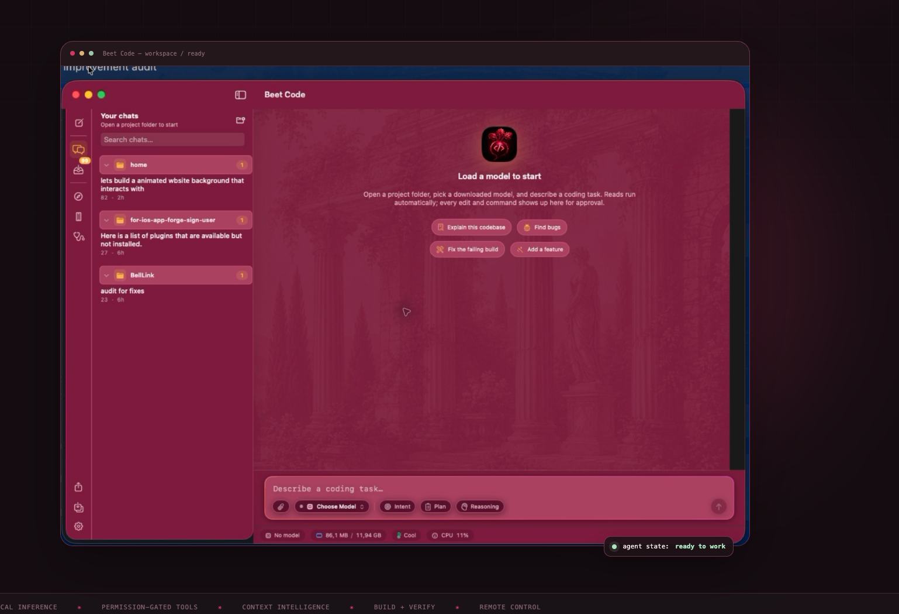
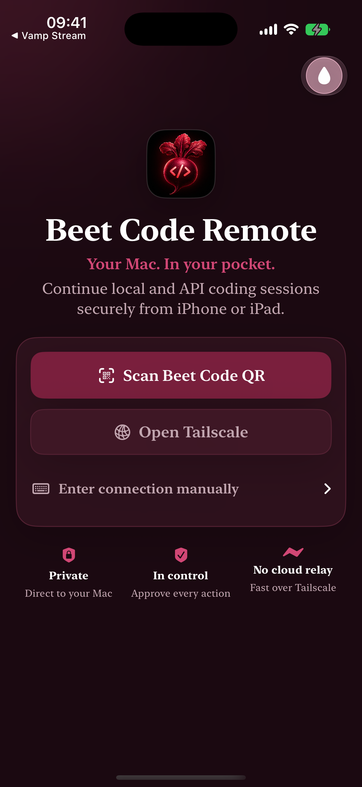
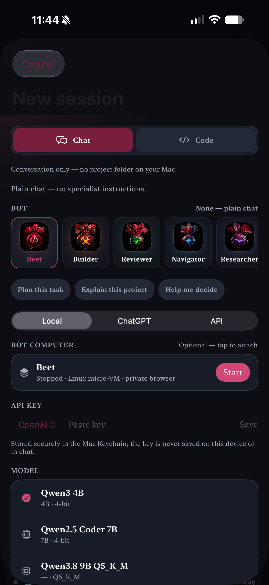
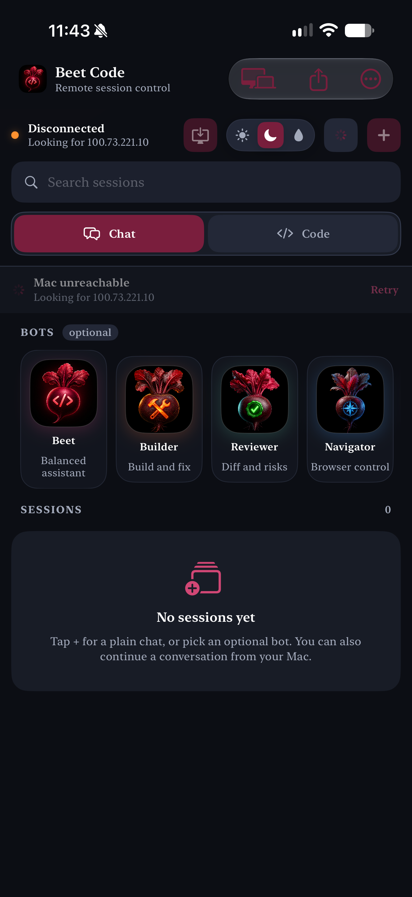
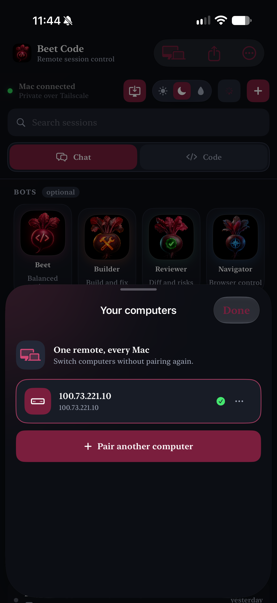
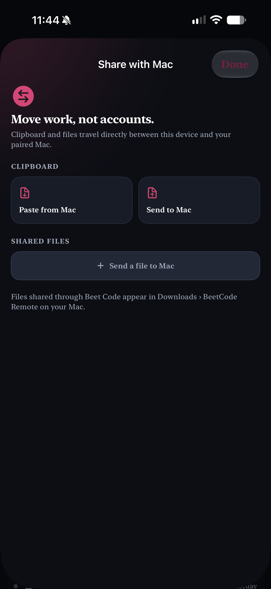
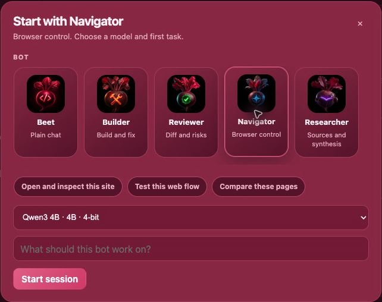

Compile the context
Workspace structure, task-ranked files, memory, and instructions are fitted to the live model budget.
A native Apple Silicon workspace for local models, safe edits, builds, simulators, browsers, and the whole agent loop — with your Mac in your pocket when you need it.

Vamp Assistant brings chats, bots, browser and Mac control into one native app, with Code available whenever a project needs it.
The agent can move quickly without becoming a black box. Each meaningful step is visible, permission-aware, and verifiable.
Workspace structure, task-ranked files, memory, and instructions are fitted to the live model budget.
Ask for a plan, inspect the exact tool surface, and keep the conversation focused on the task.
Edits, commands, browser actions, and simulator controls pass through explicit approval gates.
Builds, tests, diagnostics, or a clean diff run before the agent is allowed to call the task complete.
Bounded indexing, symbols, git state, impact analysis, and durable facts keep the model grounded in the repository.
Checkpoints, sanitized commands, canonical path confinement, and encrypted session history make changes reviewable.
Drive Xcode builds, iOS Simulator, browser checks, device installs, signing, and App Store Connect from one loop.
Pair once from the native iPhone or iPad app. Continue a session, send the next instruction, approve a tool call, or take over the Mac directly.

Keep the supporting surfaces beside the conversation so the agent can observe, act, and verify without losing the thread.
Use Core AI, MLX, or GGUF directly on Apple Silicon, or switch to an API provider when the task calls for it. Memory admission, thermal state, KV cache, and context budget stay visible.
Use the same agent loop to build an Apple project, read structured diagnostics, install to a simulator or connected device, and inspect the result.
Start with a bot, browse sessions, switch computers, and move work directly to your Mac. The companion app, browser control, and native host stay part of one continuous workflow.





A focused native app, with the important edges handled deliberately.
Start with a local model, connect your provider, or pair the phone that is already in your hand.